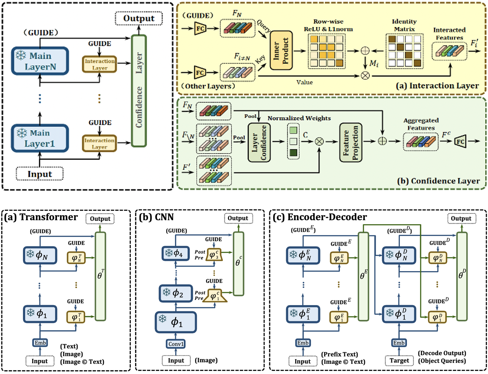

Publication
MY PAPER

End-to-End Vision Tokenizer Tuning
Wenxuan Wang*, Fan Zhang*, Yufeng Cui*, Haiwen Diao*, Zhuoyan Luo, Huchuan Lu, Jing Liu, Xinlong Wang
Under Review
2024
EVEv2: Improved Baselines for Encoder-Free Vision-Language Models
Haiwen Diao*, Xiaotong Li*, Yufeng Cui*, Yueze Wang*, Haoge Deng, Ting Pan, Wenxuan Wang, Huchuan Lu✉, Xinlong Wang✉
Under Review

Infinity-MM: Scaling Multimodal Performance with Large-Scale and High-Quality Instruction Data
Shuhao Gu*, Jialing Zhang*, Siyuan Zhou*, Kevin Yu*, Zhaohu Xing, ldwang, Zhou Cao, Jintao Jia, Zhuoyi Zhang, Yixuan Wang, Zhenchong Hu, Bo-Wen Zhang, Jijie Li, D.Liang, Yingli Zhao, Songjing Wang, Yulong Ao, Xiaotong Li, Haiwen Diao, Yufeng Cui, Xinlong Wang, Yaoqi Liu, Fangxiang Feng, Guang Liu✉
Under Review
Regularizing Subspace Redundancy of Low-Rank Adaptation
Yue Zhu*, Haiwen Diao*, Shang Gao*, Jiazuo Yu, Jiawen Zhu, Yunzhi Zhuge, Shuai Hao, Xu Jia, Lu Zhang, Ying Zhang, Huchuan Lu✉
Under Review
Autoregressive Video Generation without Vector Quantization
Haoge Deng*, Ting Pan*, Haiwen Diao*, Zhengxiong Luo*, Yufeng Cui, Huchuan Lu, Shiguang Shan, Yonggang Qi, Xinlong Wang✉
ICLR 2025
KARST: Multi-Kernel Kronecker Adaptation with Re-Scaling Transmission for Visual Classification
Yue Zhu*, Haiwen Diao*, Shang Gao*, Long Chen, Huchuan Lu✉
ICASSP 2025
Unveiling Encoder-Free Vision-Language Models
Haiwen Diao*, Yufeng Cui*, Xiaotong Li, Yueze Wang, Huchuan Lu✉, Xinlong Wang✉
NeurIPS 2024 (spotlight)
DenseFusion-1M: Merging Vision Experts for Comprehensive Multimodal Perception
Xiaotong Li*, Fan Zhang*, Haiwen Diao*, Yueze Wang, Xinlong Wang✉, Lingyu Duan✉
NeurIPS 2024
LLMs Can Evolve Continually on Modality for X-Modal Reasoning
Jiazuo Yu, Haomiao Xiong, Lu Zhang✉, Haiwen Diao, Yunzhi Zhuge, Lanqing Hong, Dong Wang, Huchuan Lu, You He, Long Chen
NeurIPS 2024
MoTrans: Customized Motion Transfer with Text-driven Video Diffusion Models
Xiaomin Li, Xu Jia✉, Qinghe Wang, Haiwen Diao, Mengmeng Ge, Pengxiang Li, You He, Huchuan Lu
ACMMM 2024
Exploring Dynamic Transformer for Efficient Object Tracking
Jiawen Zhu, Xin Chen, Haiwen Diao, Shuai Li, Jun-Yan He, Chenyang Li, Bin Luo, Dong Wang, Huchuan Lu✉
TNNLS 2025
2023
SHERL: Synthesizing High Accuracy and Efficient Memory for Resource-Limited Transfer Learning
Haiwen Diao, Bo Wan, Xu Jia, Yunzhi Zhuge, Ying Zhang, Huchuan Lu✉, Long Chen
ECCV 2024

UniPT: Universal Parallel Tuning for Transfer Learning with Efficient Parameter and Memory
Haiwen Diao,
Bo Wan,
Ying Zhang,
Xu Jia,
Huchuan Lu✉,
Long Chen
CVPR 2024
2022
GSSF: Generalized Structural Sparse Function for Deep Cross-modal Metric Learning
Haiwen Diao, Ying Zhang, Shang Gao, Jiawen Zhu, Long Chen, Huchuan Lu✉
IEEE TIP 2024

Deep Boosting Learning: A Brand-new Cooperative Approach for Image-Text Matching
Haiwen Diao, Ying Zhang, Shang Gao, Xiang Ruan, Huchuan Lu✉
IEEE TIP 2024
Plug-and-Play Regulators for Image-Text Matching
Haiwen Diao, Ying Zhang, Wei Liu, Xiang Ruan, Huchuan Lu✉
IEEE TIP 2023
2021